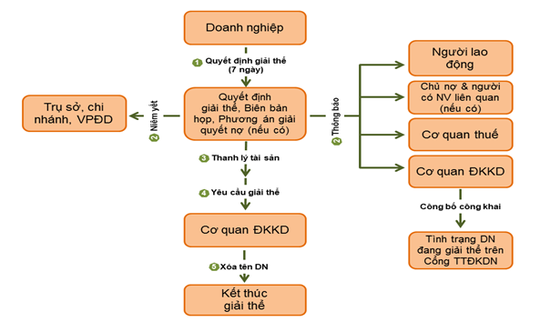

Thủ tục giải thể Doanh nghiệp, Công ty mới nhất: Điều kiện, hồ sơ, trình tự thủ tục giải thể Công ty cổ phần, TNHH 1TV, TNHH 2TV, Doanh nghiệp tư nhân ... theo Luật doanh nghiệp.
Sơ đồ trình tự giải thể Doanh nghiệp:

(Nguồn hình ảnh: Cục quản lý đăng ký kinh doanh)
Như vậy:
- Việc đầu tiên để giải thể doanh nghiệp là DN phải có Quyết định giải thể, Biên bản họp; Phương án giải quyết nợ ...
- Tiếp đó là phải niêm yết tại trụ sở, chi nhánh ... Thông báo cho người lao động, chủ nợ, cơ quan thuế, cơ quan ĐKKD ...
- Trong thời gian chờ các bạn làm thủ tục đóng mã số thuế, làm công văn và hồ sơ gửi lên thuế rồi thiếu đâu họ sẽ bảo mình bổ sung.
- Về nguyên tắc công ty muốn giải thể phải thanh toán hết các khoản nợ, thanh lý các hợp đồng, có xác nhận đóng mã số thuế của cơ quan thuế bạn nộp kèm theo với hồ sơ lên Sở KHĐT.
- Thuế là thủ tục phức tạp nhất, xong thuế thì gần như đã xong.- Về nguyên tắc công ty muốn giải thể phải thanh toán hết các khoản nợ, thanh lý các hợp đồng, có xác nhận đóng mã số thuế của cơ quan thuế bạn nộp kèm theo với hồ sơ lên Sở KHĐT.
---------------------------------------------------------------------
I. Các trường hợp và điều kiện giải thể doanh nghiệp
Theo quy định tại Điều 207 Luật doanh nghiệp số 59/2020/QH14 quy định: Các trường hợp và điều kiện giải thể doanh nghiệp:
1. Doanh nghiệp bị giải thể trong trường hợp sau đây:
a) Kết thúc thời hạn hoạt động đã ghi trong Điều lệ công ty mà không có quyết định gia hạn;
b) Theo nghị quyết, quyết định của chủ doanh nghiệp đối với doanh nghiệp tư nhân, của Hội đồng thành viên đối với công ty hợp danh, của Hội đồng thành viên, chủ sở hữu công ty đối với công ty trách nhiệm hữu hạn, của Đại hội đồng cổ đông đối với công ty cổ phần;
c) Công ty không còn đủ số lượng thành viên tối thiểu theo quy định của Luật này trong thời hạn 06 tháng liên tục mà không làm thủ tục chuyển đổi loại hình doanh nghiệp;
d) Bị thu hồi Giấy chứng nhận đăng ký doanh nghiệp, trừ trường hợp Luật Quản lý thuế có quy định khác.
2. Doanh nghiệp chỉ được giải thể khi bảo đảm thanh toán hết các khoản nợ, nghĩa vụ tài sản khác và không trong quá trình giải quyết tranh chấp tại Tòa án hoặc Trọng tài. Người quản lý có liên quan và doanh nghiệp quy định tại điểm d khoản 1 Điều này cùng liên đới chịu trách nhiệm về các khoản nợ của doanh nghiệp.
--------------------------------------------------------------------
II. Trình tự, thủ tục giải thể doanh nghiệp:Theo quy định tại Điều 208 Luật doanh nghiệp số 59/2020/QH14 quy định Trình tự, thủ tục giải thể doanh nghiệp, cụ thể như sau:
Việc giải thể doanh nghiệp trong trường hợp quy định tại các điểm a, b và c khoản 1 Điều 207 của Luật này được thực hiện theo quy định sau đây:
1. Thông qua nghị quyết, quyết định giải thể doanh nghiệp. Nghị quyết, quyết định giải thể doanh nghiệp phải bao gồm các nội dung chủ yếu sau đây:
a) Tên, địa chỉ trụ sở chính của doanh nghiệp;
b) Lý do giải thể;
c) Thời hạn, thủ tục thanh lý hợp đồng và thanh toán các khoản nợ của doanh nghiệp;
d) Phương án xử lý các nghĩa vụ phát sinh từ hợp đồng lao động;
đ) Họ, tên, chữ ký của chủ doanh nghiệp tư nhân, chủ sở hữu công ty, Chủ tịch Hội đồng thành viên, Chủ tịch Hội đồng quản trị;
3. Trong thời hạn 07 ngày làm việc kể từ ngày thông qua, nghị quyết, quyết định giải thể và biên bản họp phải được gửi đến Cơ quan đăng ký kinh doanh, cơ quan thuế, người lao động trong doanh nghiệp. Nghị quyết, quyết định giải thể phải được đăng trên Cổng thông tin quốc gia về đăng ký doanh nghiệp và được niêm yết công khai tại trụ sở chính, chi nhánh, văn phòng đại diện của doanh nghiệp.
- Trường hợp doanh nghiệp còn nghĩa vụ tài chính chưa thanh toán thì phải gửi kèm theo nghị quyết, quyết định giải thể và phương án giải quyết nợ đến các chủ nợ, người có quyền, nghĩa vụ và lợi ích có liên quan. Phương án giải quyết nợ phải có tên, địa chỉ của chủ nợ; số nợ, thời hạn, địa điểm và phương thức thanh toán số nợ đó; cách thức và thời hạn giải quyết khiếu nại của chủ nợ;
4. Cơ quan đăng ký kinh doanh phải thông báo tình trạng doanh nghiệp đang làm thủ tục giải thể trên Cổng thông tin quốc gia về đăng ký doanh nghiệp ngay sau khi nhận được nghị quyết, quyết định giải thể của doanh nghiệp. Kèm theo thông báo phải đăng tải nghị quyết, quyết định giải thể và phương án giải quyết nợ (nếu có);
5. Các khoản nợ của doanh nghiệp được thanh toán theo thứ tự ưu tiên sau đây:
a) Các khoản nợ lương, trợ cấp thôi việc, bảo hiểm xã hội, bảo hiểm y tế, bảo hiểm thất nghiệp theo quy định của pháp luật và các quyền lợi khác của người lao động theo thỏa ước lao động tập thể và hợp đồng lao động đã ký kết;
b) Nợ thuế;
c) Các khoản nợ khác;
6. Sau khi đã thanh toán chi phí giải thể doanh nghiệp và các khoản nợ, phần còn lại chia cho chủ doanh nghiệp tư nhân, các thành viên, cổ đông hoặc chủ sở hữu công ty theo tỷ lệ sở hữu phần vốn góp, cổ phần;
7. Người đại diện theo pháp luật của doanh nghiệp gửi hồ sơ giải thể doanh nghiệp cho Cơ quan đăng ký kinh doanh trong thời hạn 05 ngày làm việc kể từ ngày thanh toán hết các khoản nợ của doanh nghiệp;
8. Sau thời hạn 180 ngày kể từ ngày nhận được nghị quyết, quyết định giải thể theo quy định tại khoản 3 Điều này mà không nhận được ý kiến về việc giải thể từ doanh nghiệp hoặc phản đối của bên có liên quan bằng văn bản hoặc trong 05 ngày làm việc kể từ ngày nhận hồ sơ giải thể, Cơ quan đăng ký kinh doanh cập nhật tình trạng pháp lý của doanh nghiệp trên Cơ sở dữ liệu quốc gia về đăng ký doanh nghiệp;
--------------------------------------------------------------------------------------
Quy định chi tiết về trình tự, thủ tục giải thể doanh nghiệp như sau:
|
Đăng ký giải thể doanh nghiệp được hướng dẫn bởi Điều 70, 71 Nghị định 01/2021/NĐ-CP cụ thể như sau: Việc đăng ký giải thể doanh nghiệp quy định tại các điểm a, b và c khoản 1 Điều 207 Luật Doanh nghiệp được thực hiện theo trình tự, thủ tục sau đây: 1. Trong thời hạn 07 ngày làm việc kể từ ngày thông qua nghị quyết, quyết định giải thể quy định tại khoản 1 Điều 208 Luật Doanh nghiệp, doanh nghiệp gửi thông báo về việc giải thể doanh nghiệp đến Phòng Đăng ký kinh doanh nơi doanh nghiệp đặt trụ sở chính. - Kèm theo thông báo phải có các giấy tờ sau đây: a) Nghị quyết, quyết định và biên bản họp của Hội đồng thành viên đối với công ty trách nhiệm hữu hạn hai thành viên trở lên, công ty hợp danh, của Đại hội đồng cổ đông đối với công ty cổ phần; nghị quyết, quyết định của chủ sở hữu công ty đối với công ty trách nhiệm hữu hạn một thành viên về việc giải thể doanh nghiệp; b) Phương án giải quyết nợ (nếu có). 2. Trong thời hạn 01 ngày làm việc kể từ ngày nhận được thông báo về việc giải thể doanh nghiệp, Phòng Đăng ký kinh doanh phải đăng tải các giấy tờ quy định tại khoản 1 Điều này và thông báo tình trạng doanh nghiệp đang làm thủ tục giải thể trên cổng thông tin quốc gia về đăng ký doanh nghiệp, chuyển tình trạng pháp lý của doanh nghiệp trong Cơ sở dữ liệu quốc gia về đăng ký doanh nghiệp sang tình trạng đang làm thủ tục giải thể và gửi thông tin về việc giải thể của doanh nghiệp cho Cơ quan thuế. - Doanh nghiệp thực hiện thủ tục hoàn thành nghĩa vụ thuế với Cơ quan thuế theo quy định của Luật Quản lý thuế. 3. Trong thời hạn 05 ngày làm việc kể từ ngày thanh toán hết các khoản nợ của doanh nghiệp, doanh nghiệp gửi hồ sơ đăng ký giải thể doanh nghiệp đến Phòng Đăng ký kinh doanh nơi doanh nghiệp đặt trụ sở chính. - Hồ sơ đăng ký giải thể doanh nghiệp bao gồm các giấy tờ quy định tại khoản 1 Điều 210 Luật Doanh nghiệp (cụ thể bên dưới). 4. Trước khi nộp hồ sơ đăng ký giải thể doanh nghiệp, doanh nghiệp phải thực hiện thủ tục chấm dứt hoạt động chi nhánh, văn phòng đại diện, địa điểm kinh doanh của doanh nghiệp tại Phòng Đăng ký kinh doanh nơi đặt chi nhánh, văn phòng đại diện, địa điểm kinh doanh. 5. Sau khi tiếp nhận hồ sơ đăng ký giải thể doanh nghiệp, Phòng Đăng ký kinh doanh gửi thông tin về việc doanh nghiệp đăng ký giải thể cho Cơ quan thuế. - Trong thời hạn 02 ngày làm việc kể từ ngày nhận được thông tin của Phòng Đăng ký kinh doanh, Cơ quan thuế gửi ý kiến về việc hoàn thành nghĩa vụ nộp thuế của doanh nghiệp đến Phòng đăng ký kinh doanh. - Trong thời hạn 05 ngày làm việc kể từ ngày nhận hồ sơ đăng ký giải thể doanh nghiệp, Phòng Đăng ký kinh doanh chuyển tình trạng pháp lý của doanh nghiệp trong Cơ sở dữ liệu quốc gia về đăng ký doanh nghiệp sang tình trạng đã giải thể nếu không nhận được ý kiến từ chối của Cơ quan thuế, đồng thời ra thông báo về việc giải thể của doanh nghiệp. 6. Sau thời hạn 180 ngày kể từ ngày Phòng Đăng ký kinh doanh nhận được thông báo kèm theo nghị quyết, quyết định giải thể của doanh nghiệp mà Phòng Đăng ký kinh doanh không nhận được hồ sơ đăng ký giải thể của doanh nghiệp và ý kiến phản đối bằng văn bản của bên có liên quan, Phòng Đăng ký kinh doanh chuyển tình trạng pháp lý của doanh nghiệp trong Cơ sở dữ liệu quốc gia về đăng ký doanh nghiệp sang tình trạng đã giải thể, gửi thông tin về việc giải thể của doanh nghiệp cho Cơ quan thuế, đồng thời ra thông báo về việc giải thể của doanh nghiệp trong thời hạn 03 ngày làm việc kể từ ngày kết thúc thời hạn nêu trên. 7. Trong thời hạn 180 ngày kể từ ngày nhận được thông báo kèm theo nghị quyết, quyết định giải thể quy định tại Điều 208 Luật Doanh nghiệp và Phòng Đăng ký kinh doanh chưa chuyển tình trạng pháp lý của doanh nghiệp sang tình trạng đã giải thể trong Cơ sở dữ liệu quốc gia về đăng ký doanh nghiệp, nếu doanh nghiệp không tiếp tục thực hiện giải thể, doanh nghiệp gửi thông báo về việc hủy bỏ nghị quyết, quyết định giải thể đến Phòng Đăng ký kinh doanh nơi doanh nghiệp đặt trụ sở chính. Kèm theo thông báo phải có nghị quyết, quyết định của chủ sở hữu công ty đối với công ty trách nhiệm hữu hạn một thành viên, của Hội đồng thành viên đối với công ty trách nhiệm hữu hạn hai thành viên trở lên, công ty hợp danh, của Đại hội đồng cổ đông đối với công ty cổ phần về việc hủy bỏ nghị quyết, quyết định giải thể. Trong thời hạn 03 ngày làm việc kể từ ngày nhận được thông báo về việc hủy bỏ nghị quyết, quyết định giải thể doanh nghiệp, Phòng Đăng ký kinh doanh phải đăng tải thông báo và nghị quyết, quyết định về việc hủy bỏ nghị quyết, quyết định giải thể doanh nghiệp trên cổng thông tin quốc gia về đăng ký doanh nghiệp, khôi phục tình trạng pháp lý của doanh nghiệp trên Hệ thống thông tin quốc gia về đăng ký doanh nghiệp và gửi thông tin hủy bỏ nghị quyết, quyết định giải thể của doanh nghiệp cho Cơ quan thuế. 8. Đối với doanh nghiệp sử dụng con dấu do cơ quan công an cấp, doanh nghiệp có trách nhiệm trả con dấu, Giấy chứng nhận đã đăng ký mẫu con dấu cho cơ quan công an theo quy định khi làm thủ tục giải thể. |
-----------------------------------------------------------------------------
Theo quy định tại Điều 210 Luật doanh nghiệp số 59/2020/QH14 quy định: Hồ sơ giải thể doanh nghiệp:
1. Hồ sơ giải thể doanh nghiệp, Công ty cổ phần, Doanh nghiệp tư nhân, Công ty TNHH 1TV, Công ty TNHH 2TV trở lên ... bao gồm giấy tờ sau đây:
- Quyết định giải thể doanh nghiệp.
Tham khảo mẫu: Quyết định giải thể doanh nghiệp
- Thông báo về việc giải thể của doanh nghiệp (Phụ lục II-22 theo Thông tư 01/2021/TT-BKHĐT);
Tham khảo mẫu: Thông báo về việc giải thể doanh nghiệp
- Báo cáo thanh lý tài sản doanh nghiệp;
- Danh sách chủ nợ và số nợ đã thanh toán, gồm cả thanh toán hết các khoản nợ về thuế và nợ tiền đóng bảo hiểm xã hội, bảo hiểm y tế, bảo hiểm thất nghiệp cho người lao động sau khi quyết định giải thể doanh nghiệp (nếu có).
Tham khảo mẫu: Danh sách chủ nợ và số nợ đã thanh toán
- Con dấu và giấy chứng nhận mẫu dấu (nếu có) hoặc giấy chứng nhận đã thu hồi con dấu (trường hợp trước đây đăng ký dấu với Cơ quan Công an).
- Giấy chứng nhận đăng ký doanh nghiệp (bản sao y)
- Giấy ủy quyền về việc giải thể (nếu là người đại diện pháp luật đi làm thì không cần)
Ngoài ra: Có thể các bạn sẽ phải cần thêm:
- Xác nhận của Ngân hàng nơi Công ty mở tài khoản về việc doanh nghiệp đã tất toán tài khoản (trường hợp chưa mở tài khoản tại Ngân hàng, thì có văn cam kết chưa mở tài khoản và không nợ tại bất kỳ Ngân hàng, tổ chức cá nhân nào).
- Giấy tờ chứng minh doanh nghiệp đã đăng bố cáo giải thể theo quy định.
- Thông báo của Cơ quan Thuế về việc đóng mã số thuế; (trường hợp chưa đăng ký thuế thì phải có văn bản xác nhận của Cơ quan Thuế).
- Trường hợp doanh nghiệp có chi nhánh, VPĐD thì phải nộp kèm theo hồ sơ giải thể (chấm dứt hoạt động) của chi nhánh, VPĐD.
2. Thành viên Hội đồng quản trị công ty cổ phần, thành viên Hội đồng thành viên công ty trách nhiệm hữu hạn, chủ sở hữu công ty, chủ doanh nghiệp tư nhân, Giám đốc hoặc Tổng giám đốc, thành viên hợp danh, người đại diện theo pháp luật của doanh nghiệp chịu trách nhiệm về tính trung thực, chính xác của hồ sơ giải thể doanh nghiệp.
3. Trường hợp hồ sơ giải thể không chính xác, giả mạo, những người quy định tại khoản 2 Điều này phải liên đới chịu trách nhiệm thanh toán quyền lợi của người lao động chưa được giải quyết, số thuế chưa nộp, số nợ khác chưa thanh toán và chịu trách nhiệm cá nhân trước pháp luật về những hệ quả phát sinh trong thời hạn 05 năm kể từ ngày nộp hồ sơ giải thể doanh nghiệp đến Cơ quan đăng ký kinh doanh.
-----------------------------------------------------------------
=> Nhìn chung, thủ tục giải thể doanh nghiệp tương đối phức tạp, đòi hỏi kết quả của nhiều thủ tục hành chính của các cơ quan khác nhau.
Do vậy, doanh nghiệp cần liên hệ với cơ quan đăng ký kinh doanh và Cơ quan Thuế nơi doanh nghiệp đặt trụ sở chính để có những hướng dẫn cụ thể.
Tải hồ sơ giải thể Doanh nghiệp tại đây nhé:
Trường hợp bạn không tải về được thì làm theo cách sau:
Bước 1: Comment mail vào phần bình luận bên dưới
Bước 2: Gửi yêu cầu vào mail: ketoandieutam@gmail.com (Tiêu đề ghi rõ Tài liệu muốn tải)
Chú ý: Bài viết trên là quy định về hồ sơ giải thể Công ty cổ phần, Cty TNHH 1TV, Công ty TNHH 2 TV trở lên, Doanh nghiệp tư nhân. Còn hồ sơ giải thể các loại hình khác như: Giải thể chi nhánh, văn phòng đại diện, địa điểm kinh doanh … các bạn xem chi tiết tại đây nhé: dangkykinhdoanh.gov.vn
-------------------------------------------------------------------------
IV. Các hoạt động bị cấm kể từ khi có quyết định giải thể:Theo quy định tại Điều 211 Luật doanh nghiệp số 59/2020/QH14 quy định: Các hoạt động bị cấm kể từ khi có quyết định giải thể.
1. Kể từ khi có quyết định giải thể doanh nghiệp, doanh nghiệp, người quản lý doanh nghiệp bị nghiêm cấm thực hiện các hoạt động sau đây:
a) Cất giấu, tẩu tán tài sản;
b) Từ bỏ hoặc giảm bớt quyền đòi nợ;
c) Chuyển các khoản nợ không có bảo đảm thành các khoản nợ có bảo đảm bằng tài sản của doanh nghiệp;
d) Ký kết hợp đồng mới, trừ trường hợp để thực hiện giải thể doanh nghiệp;
đ) Cầm cố, thế chấp, tặng cho, cho thuê tài sản;
e) Chấm dứt thực hiện hợp đồng đã có hiệu lực;
g) Huy động vốn dưới mọi hình thức.
2. Tùy theo tính chất và mức độ vi phạm, cá nhân có hành vi vi phạm quy định tại khoản 1 Điều này có thể bị xử phạt vi phạm hành chính hoặc bị truy cứu trách nhiệm hình sự; nếu gây thiệt hại thì phải bồi thường.
----------------------------------------------------------------------------------------------
Kế toán Diệu Tâm xin chúc các bạn thành công.
Các bạn muốn tìm hiểu chuyên sâu hơn về thuế TNCN, TNDN... Kỹ năng quyết toán thuế thì có thể có tham gia: Khóa học kế toán thuế thực hành thực tế chuyên sâu.
-----------------------------------------------------------------------------
Các bạn muốn tìm hiểu chuyên sâu hơn về thuế TNCN, TNDN... Kỹ năng quyết toán thuế thì có thể có tham gia: Khóa học kế toán thuế thực hành thực tế chuyên sâu.
-----------------------------------------------------------------------------